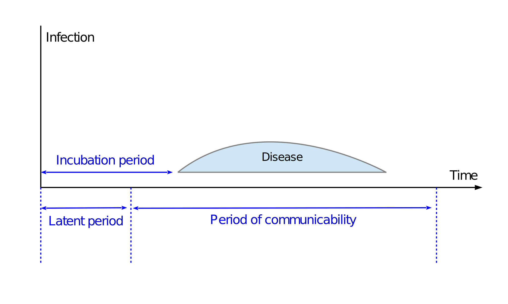

“Compartmentalization models and disease dynamics”
- toc: true
- badges: true
- comments: true
- categories: [modeling, compartmentalization, SEIR, epidemiology, disease dynamics]
- image: images/compartmentalization.jpg

Motivation for write-up
This is the 1st part of a multi-part series blog post on modeling in epidemiology.
The COVID-19 pandemic has brought a lot of attention to the study of epidemiology and more specifically to the various mathematical models that are used to inform public health policies. Everyone has been trying to understand the growth or slowing of new cases and trying to predict the necessary sanitary resources. This blog post attempts to explain the foundations for some of the most used models and enlighten the reader on a few important points.
In this first post I want to introduce the concept of compartmentalization and how it forms the basis for studying disease dynamics on the population level.
How to model infectious diseases on population level ?
Compartments
When modelling infectious diseases, and pandemics in particular, a key ask is to predict the number of infected people at any given time in order to estimate the sanitary resources that will be necessary.
From this simple qestion results the idea of compartmentalization of the population i.e. the division of the population into the two most basic categories:
- those that are infected
- those that are not
This is ultimately the foundation for all compartmental models in epidemiology.
The nuances between the models then come from how the above two groups are further compartmentalized. That is to say, how we decide the composition of the infected and the not-infected groups.
For example, the non-infected group could be further sub-categorized into: * Susceptible * Immune
And the infected group into: * Asymptomatic * Symptomatic
Or, another option, into: * No treatment necessary * Require treatment: * Local Doctor visit * Hospitalization * Admitted to intensive care unit
As you can see there are many ways to do this, but the more categories you have, the more difficult it might become to model. Usually we determine these subcategories in order to match available data.
Dynamics
While the compartments describe the state any individual can be in at a certain point in time, the dynamics describe the ways in which the compartments interact with each other.
I want to underline the separation between disease dynamics on the individual level, and that on the population level below.
- Individual level disease dynamics:
This describes, on the individual level, the progression of the disease i.e. how one person can go from one state to another (one compartment to another)
For example: how does a healthy person become ill and what is the clinical course of the disease for this person?
- Population-level dynamics:
On the other hand, the population level dynamics describe, on a population level, how the total number of individuals in each compartment vary over time.
We will see more on this in the next blog posts.
Two simple examples - the SIR and SEIR models
Let’s have a look at a basic compartmental model, first the SIR model.
- S –> Susceptible state:
An S individual is simply someone susceptible to the disease, that is anyone in the population who is healthy and not immune to the disease.
- I –> Infectious state:
Once an individual is exposed to the disease he will develop this disease and become infectious.
- R –> Recovered state:
An individual will either fight off the infection (with the help or not of treatment) or die. These are all included in the R state.
In the basic SIR model, anyone R has aquired full and infinite immunity and cannot catch the disease again (of course many variations can be included to reflect more closely a disease).
In this write-up and in the following blog posts we will focus on the SEIR models, which are similar to the SIR compartments above with the additional E state between S and I.
- E –> Exposed state:
The exposed state is the state when an individual has been exposed to the disease, but has not become infectious yet.
Some important vocabulary
- \(\underline{Infectious\ period:}\)
Also called the period of communicability, the infectious period is the time during which an individual can transmit the disease to another: \(T_{Infectious}\)
- \(\underline{Clinical\ infection\ period:}\)
This period corresponds to the period where the infected indvidual shows symptoms: \(T_{Clinical}\)
- \(\underline{Latent\ period:}\)
The latent period is the time between exposure of an individual and the start of the period of communicability of that individual: \(T_{Latent}\)
- \(\underline{Incubation\ period:}\)
The incubation period on the other hand, is the time from exposure of an individual to development of the infection (appearance of disease): \(T_{Incubation}\)
It should be noted the latent period and incubation period are not necessarily the same.
- \(\underline{T_{Latent} < T_{Incubation}}\):
In this case, an individual who has been exposed becomes infectious before the development of disease.
We call this a subclinical infection and during that time the individual is called an asymptomatic carrier.
- \(\underline{T_{Latent} > T_{Incubation}:}\)
In other cases, the latent period can be longer than the incubation period, eg: smallpox.
- \(\underline{T_{Latent} + T_{Infectious} > T_{Incubation} + T_{Clinical}:}\)
Another case of subclinical infection resulting in asymptomatic carriers occurs when the end of clinical infection (of disease) happens earlier than the end of the period of communicability (see Wikipedia figure below)
Overall, these asymptomatic carriers can be a significant difficutly to overcome epidemics.

- \(\underline{Basic\ reproduction\ number:}\)
The basic reproduction number \(R_0\) is the measure of secondary infections in a susceptible population.
In other words, it is the number of people that each infectious individual will infect over the time of their infectious period.
Example:
If an infectious individual infects 3 other individuals over the course of his infection, his \(R_0\) is 3.
This number is a very important element in the spreading dynamics (see derivation below).
A closer look at the SEIR model
Individual-level disease dynamic
As explained above, the individual-level disease dynamic describes the progression of disease within an individual i.e. the progression of an individual from one state to another.
In the models used here (SEIR model), an individual starts at S (although an initial exposed or infectious person is injected into the population at time t=0).
If exposed to the disease he will move into the state E.
After which he will move to the I state with probability 1, but in a time unique to himself.
Again after which he will move into the state R with probability 1, and again in a time unique to him.
From state R he will stay in state R (either dead or has aquired full and inifite immunity).
Let’s have a closer look:
S → E
The chances of an individual going from S → E depends on three things: 1. the number of contacts the person has per unit time (given by \(r\)) 2. the chance a given contact is with an I - infectious individual (the higher the number of I in the population, the higher the chance) 3. the chance of an S contracting the disease from a contact with an I (given by \(\rho\))
E → I
The latent period
All people exposed will eventually develop disease.
However, individually, a person might go from E to I on the first day, or after 10 days, this is unique to the individual.
Every additional day following exposure the probability of this individual to go from E → I increases (we will have a look at the probability distribution and its importance later).
I → R
The period of communicability
Similarly, all infectious people will recover (or die).
Again, individually, a person might go from I to R in 5 days or in 15 days, this time is the recovery time and is proper to the individual.
Population level dynamics
Most basic models tend to disregard the notion of individual dynamics above in favor of poopulation level dynamics.
That is to say the models tend to model disease on a population level without looking at the specific pogression of disease within the individuals and using averages instead (although the S → E uses the same logic as above).
Below is an explanation for such an SEIR model with its mathematical formulation.
Note no births or deaths are included.
S → E
As stated above, going from S to E on a particular day depends on these three characteristics: * the proportion of infectious people in the population on that day: \(i(t) = \frac{I(t)}{N}\) * the number of contacts an individual has per day: \(r\) * the chance for an S to contract the disease after contact with an I: \(\rho\)
We can combine the last two into \(\beta = r \rho\)
On a population-level however, the number of S that will become E also depends on the proportion of S in the population (of course if there are no S, no one will become E of course).
So we add the following requirement: * the proportion of susceptible people in the population on that day: \(s(t) = \frac{S(t)}{N}\)
So the change in the number of S in a population on a given day is equal to:
\(- \beta i(t) s(t)\)
(note the negative sign to indicate the number of S is diminishing as they become exposed)
Hence we can formulate this mathematically as follows:
- Discrete-time: \[\Delta S = -\beta I S\Delta T\]
- Continuous-time: \[\frac{ds(t)}{dt}=-\beta i(t) s(t)\]
E → I
We have seen above how each individual goes from E to I.
On a population level, the number of E changes in two ways: * new additions following S → E * reduction following E → I
We already know the number from S → E is:
\[\beta i(t) s(t)\]
So how can we model the number of E → I?
While individually this is a bit more complicated to model and pertains to the specific probability distribution of the latent period, on a population level we can use the average time it takes - this is what most models do (part 3 of this blog post will show why this is wrong for COVID-19).
Let’s say average latent period is
\[\frac{1}{\sigma}\]
then we know that every unit time that goes by, we have
\[\sigma E\]
individuals that transition from E → I.
Mathematically, we write this as : * Discrete-time: \[\Delta E = (\beta I S-\sigma E) \Delta T\] * Continuous-time: \[\frac{de(t)}{dt}=\beta i(t) s(t) - \sigma e(t)\]
I → R
Similarly as above, we have seen above how each individual goes from I to R but this does not tell us about the population level dynamics.
On a population level, the number of I changes in two ways: * new additions following E → I * reduction following I → R
We know the number from E → I is:
\[\sigma e(t)\]
How can we model the number of I → R?
Again, while individually this is complicated, on a population level, how about averaging out the period of infectiousness, this is what most models do.
Let’s say average time of infectiousness is
\[\frac{1}{\gamma}\]
Then we have: * Discrete-time: \[\Delta I = (\sigma E - \gamma I) \Delta T\] * Continuous-time: \[\frac{di(t)}{dt}=\sigma e(t) - \gamma i(t)\]
R → R
Finally, it is simple to model the number of individuals in R state with the following equation: * Discrete-time: \[\Delta R = \gamma I \Delta T\] * Continuous-time: \[\frac{dr(t)}{dt}=\gamma i(t)\]
Effective and Basic Reproduction Numbers: \(R\) and \(R_0\) respectively
As stated above, \(R_0\) is the measure of secondary infections. Let’s have a look how we can characterize it.
Understanding how the infection spreads
Any individual in state I (infectious) will contaminate others according to the following: * Number of contacts the individual has per day given by: \(r_i\) * Probability to infect an S after contact given by: \(\rho_i\) * Probability of a contact being with an S given by: \(\frac{S(t)}{N} = s(t)\) * The period of infectiousness of the individual given by [\(j_i, j_i+\frac{1}{\tau_i}\)] (where \(j_i\) is the first day of infectiousness for that individual and \(\frac{1}{\tau_i}\) is that individuals’ time of infectiousness)
Remember \(r_i\rho_i=\beta_i\)
Derivation of \(R\) for each individual
Let’s call the measure of \(R\) for any individual \(R_i\).
From the parameters above we can write \(R_i\) for each infectious individual as the sum of secondary infections per day of infectiousness as below: * Discrete-time: \[R_i = \sum_{Day=j_i}^{j_i+\frac{1}{\tau_i}} \beta_i \frac{S(Day)}{N}\] *Continuous-time: \[R_i = \int_{j_i}^{j_i+\frac{1}{\tau_i}} \beta_i s(t) dt\]
Finding \(R_0\) of each individual by making assumptions
\(R_{0,i}\) is the measure of \(R_i\) in a susceptible population, i.e. when: \[S = N\]
In other words: \[R_{0,i} = R_i ~ \frac{N}{S}\]
If we make the following assumptions: * s(t) is constant over the course of infectiousness of an individual: \[s(t) = s(t+\frac{1}{\tau_i})\] * \(\beta_i\) is a constant and does not vary over the course of time (no control measures)
Then the equation for \(R_{0,i}\) reduces to the following: \[R_{0,i} = [\beta_i]_{j_i}^{j_i+\frac{1}{\tau_i}} = \frac{\beta_i}{\tau_i}\]
We can see the basic reproduction number of an individual is fully characterized by the \(\beta_i\) and the \(\tau_i\) of that individual.
\(R_0\) for a population
To a generalize to a population-level, we can simply find the expected value for the equation above: \[R_0 = E[R_{0,i}] = \frac{E[\beta_i]}{E[\tau_i]}\]
Assuming: * \(E[\beta_i] = \beta\) * \(E[\tau_i] = \gamma\)
We can write: \[R_0 = \frac{\beta}{\gamma}\]
Herd Immunity
As just described, \(R\) is the measure of secondary infections, and \(R_0\) is the measure of secondary infections in a susceptible population where \(R=R_0~s(t)\).
It is easy to understand that if each infectious individual contaminates less than 1 other individual on average (\(R < 1\)) then the number of exposed, and eventually infectious, individuals will diminish and tend to 0.
On the other hand, if each infectious individual contaminates more than 1 other individual (\(R > 1\)) then the number of infectious individuals will rise (chance of epidemic).
Mathematical formulation:
\[\frac{d~e(t)}{dt} = \beta~i(t)~s(t) - \gamma~i(t)\] \[\leftrightarrow\frac{d~e(t)}{dt} = R_0~\gamma~i(t)~s(t) - \gamma~i(t)\] \[\leftrightarrow\frac{d~e(t)}{dt} = \gamma~i(t)~(R_0~s(t) - 1)=\gamma~i(t)~(R - 1)\]
And so we find that in a population where \(\gammaĩ(t)>0\): \[\frac{d~e(t)}{dt} = 0\] \[\leftrightarrow R-1 = 0\] \[\leftrightarrow R = 1\]
If \(R<1\) then \(\frac{d~e(t)}{dt} < 0\)
Herd immunity threshold:
The herd immunity threshold is the point at which enough of the population is immune to the disease (not susceptible) in order to have \(R < 1\) and can be calculated as follows: \[R = R_0 ~ s(t)\]
We know the proportion of the population immune to the disease is: \[Immune(t) = 1-s(t)\] \[\leftrightarrow\ s(t)=1-Immune(t)\]
The threshold of \(R = 1\) is achieved when: \[R_0 ~s(t) = 1\] \[\leftrightarrow\ R_0 ~(1-Immune(t)) = 1\] \[\leftrightarrow\ 1-Immune(t) = \frac{1}{R_0}\] \[\leftrightarrow\ Immune(t) = 1-\frac{1}{R_0}\]
When the proportion of immune individuals in a population reaches \(1-\frac{1}{R_0}\) then \(R\) will become smaller than 1 and the number of infectious individuals will diminish and tend to 0.
Conclusion
This was a brief introduction to compartmentalization models and the dynamics associated with them.
Of course these sort of derivations can be done for many different types of comprtaments and their relevant dynamics, but the SEIR is simple enough to understand and model quickly.